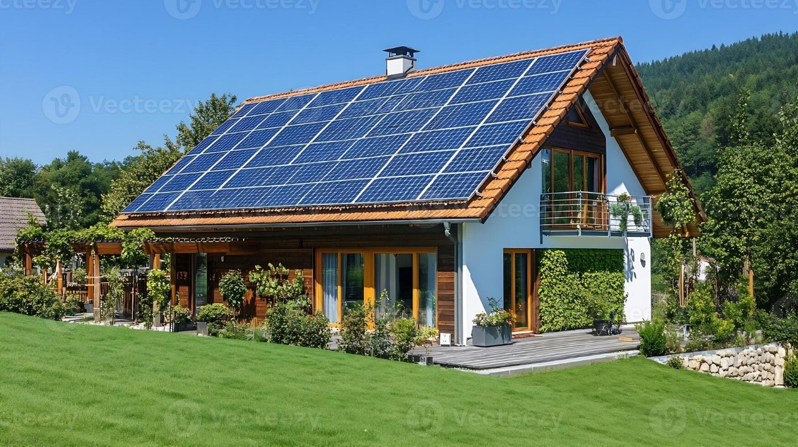
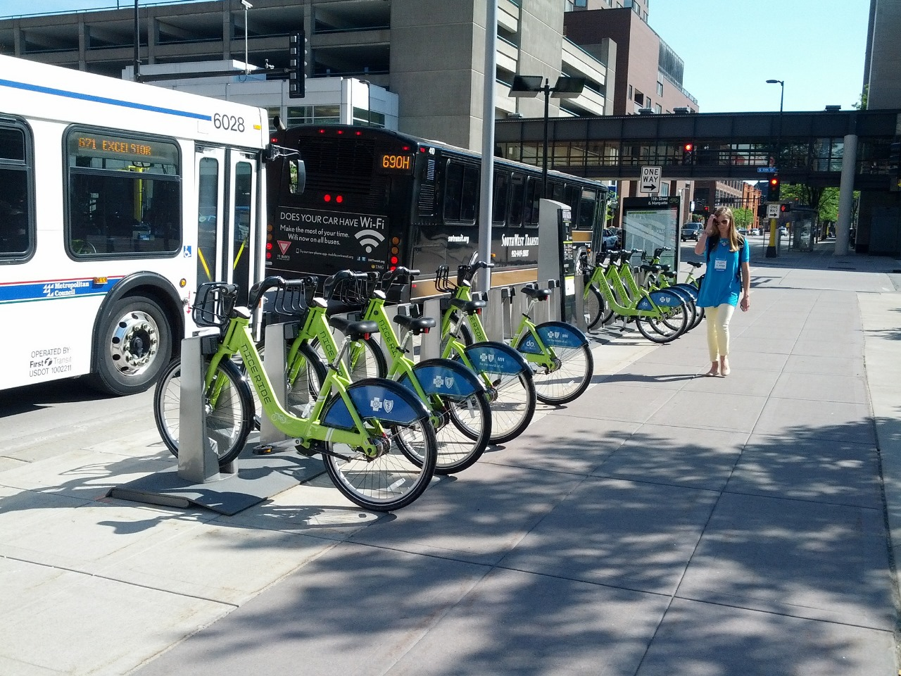
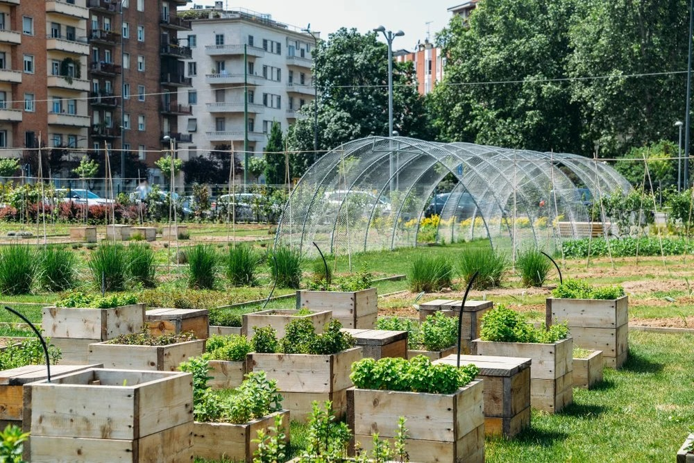
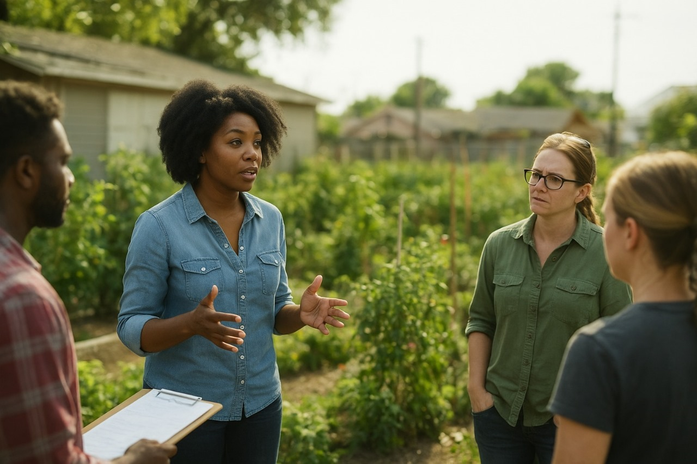

Los Angeles is more than a city
It’s a spirit of resilience and reinvention. Today, we stand at a turning point:
to not just restore what was lost, but to reimagine a greener, stronger, and more connected future.
Our vision is to bring LA back to life—revived, renewed, and ready to shine again as a global symbol of possibility.

🏠 Smart Eco-Housing
- Solar-powered housing units designed for energy independence.
- Modular, clean, and affordable shelters that can expand with demand.
- Designed as zero-waste communities with recycling systems.

🚍 Connected Clean Transport
- Electric shuttles and shared bikes to link Skid Row with Downtown LA.
- Smart charging stations powered by solar grids.
- Easy, sustainable mobility → no isolation.
👩🌾 Empowered Communities
- Training programs in urban agriculture and renewable energy jobs.
- Residents become producers, not just consumers.
- Safe public spaces that encourage inclusion and dignity.
🌍 Urban Agriculture Revolution
- Turning abandoned lands into productive green hubs.
- Hydroponics & raised beds → farming without soil contamination.
- Drip irrigation + rain harvesting → maximum water efficiency.
- Long-term leases ensure stability & investment security.

🌱 Greener Skid Row
- Creation of urban forests & community gardens.
- Cooling shaded zones that fight heat + improve air quality.
- Edible gardens providing fresh food to residents.
🤝 The Role of Local Leaders in Our Solution
🏙 Local Leadership as Catalysts
Our vision isn’t top-down. We believe city officials, community leaders, and NGOs must be at the heart of Skid Row’s transformation.

🔑 How Leaders Play a Key Role
- Policy Support: Expand programs like UAIZ tax incentives to drive green investment.
- Community Trust: Act as bridges between residents and developers for transparency.
- Resource Mobilization: Channel city funds, grants, and partnerships into housing & infrastructure.
- Stability: Secure long-term land leases for urban farms and housing projects.
- Integration: Partner with universities & NGOs to launch training in farming & renewable energy.
🌍 Why This Matters
When local leadership owns the change, solutions become permanent and community-driven.
- ✔ A city-wide movement led by trusted voices
- ✔ A replicable model for other cities
- ✔ A shared success story uniting government, science & citizens

✨ The Vision
We’re not just solving homelessness or food deserts.
We’re building:
- ✔ A healthier LA with cleaner air & better nutrition.
- ✔ A stronger economy with green jobs & sustainable business models.
- ✔ A socially integrated city where everyone has a role.
- ✔ A global model for climate-resilient, inclusive urban living.
This project is a vision to transform Los Angeles into a global model for urban sustainability and social equity. Explore the two core pillars of transformation below.